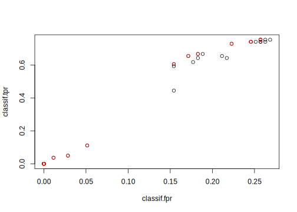

3.3 Tuning with Hyperband
Besides the more traditional tuning methods, the ecosystem around mlr3 offers another procedure for hyperparameter optimization called Hyperband implemented in the mlr3hyperband package. Hyperband is a budget-oriented procedure, weeding out suboptimal performing configurations early on during a partially sequential training process, increasing tuning efficiency as a consequence. For this, a combination of incremental resource allocation and early stopping is used: As optimization progresses, computational resources are increased for more promising configurations, while less promising ones are terminated early. To give an introductory analogy, imagine two horse trainers are given eight untrained horses. Both trainers want to win the upcoming race, but they are only given 32 units of food. Given that each horse can be fed up to 8 units food (“maximum budget” per horse), there is not enough food for all the horses. It is critical to identify the most promising horses early, and give them enough food to improve. So, the trainers need to develop a strategy to split up the food in the best possible way. The first trainer is very optimistic and wants to explore the full capabilities of a horse, because he does not want to pass a judgment on a horse’s performance unless it has been fully trained. So, he divides his budget by the maximum amount he can give to a horse (lets say eight, so \(32 / 8 = 4\)) and randomly picks four horses - his budget simply is not enough to fully train more. Those four horses are then trained to their full capabilities, while the rest is set free. This way, the trainer is confident about choosing the best out of the four trained horses, but he might have overlooked the horse with the highest potential since he only focused on half of them. The other trainer is more creative and develops a different strategy. He thinks, if a horse is not performing well at the beginning, it will also not improve after further training. Based on this assumption, he decides to give one unit of food to each horse and observes how they develop. After the initial food is consumed, he checks their performance and kicks the slowest half out of his training regime. Then, he increases the available food for the remaining, further trains them until the food is consumed again, only to kick out the worst half once more. He repeats this until the one remaining horse gets the rest of the food. This means only one horse is fully trained, but on the flip side, he was able to start training with all eight horses. On race day, all the horses are put on the starting line. But which trainer will have the winning horse? The one, who tried to train a maximum amount of horses to their fullest? Or the other one, who made assumptions about the training progress of his horses? How the training phases may possibly look like is visualized in figure 3.1.

Figure 3.1: Visulization of how the training processes may look like. The left plot corresponds to the non-selective trainer, while the right one to the selective trainer.
Hyperband works very similar in some ways, but also different in others. It is not embodied by one of the trainers in our analogy, but more by the person, who would pay them. Hyperband consists of several brackets, each bracket corresponding to a trainer, and we do not care about horses but about hyperparameter configurations of a machine learning algorithm. The budget is not in terms of food, but in terms of a hyperparameter of the learner that scales in some way with the computational effort. An example is the number of epochs we train a neural network, or the number of iterations in boosting. Furthermore, there are not only two brackets (or trainers), but several, each placed at a unique spot between fully explorative of later training stages and extremely selective, equal to higher exploration of early training stages. The level of selection aggressiveness is handled by a user-defined parameter called \(\eta\). So, \(1/\eta\) is the fraction of remaining configurations after a bracket removes his worst performing ones, but \(\eta\) is also the factor by that the budget is increased for the next stage. Because there is a different maximum budget per configuration that makes sense in different scenarios, the user also has to set this as the \(R\) parameter. No further parameters are required for Hyperband – the full required budget across all brackets is indirectly given by \[(\lfloor \log_{\eta}{R} \rfloor + 1)^2 * R\] (Li et al. 2016). To give an idea how a full bracket layout might look like for a specific \(R\) and \(\eta\), a quick overview is given in the following table.
|
|
|
|
Of course, early termination based on a performance criterion may be disadvantageous if it is done too aggressively in certain scenarios. A learner to jumping radically in its estimated performance during the training phase may get the best configurations canceled too early, simply because they do not improve quickly enough compared to others. In other words, it is often unclear beforehand if having an high amount of configurations \(n\), that gets aggressively discarded early, is better than having a high budget \(B\) per configuration. The arising tradeoff, that has to be made, is called the “\(n\) versus \(B/n\) problem”. To create a balance between selection based on early training performance versus exploration of training performances in later training stages, \(\lfloor \log_{\eta}{R} \rfloor + 1\) brackets are constructed with an associated set of varying sized configurations. Thus, some brackets contain more configurations, with a small initial budget. In these, a lot are discarded after having been trained for only a short amount of time, corresponding to the selective trainer in our horse analogy. Others are constructed with fewer configurations, where discarding only takes place after a significant amount of budget was consumed. The last bracket usually never discards anything, but also starts with only very few configurations – this is equivalent to the trainer explorative of later stages. The former corresponds high \(n\), while the latter high \(B/n\). Even though different brackets are initialized with a different amount of configurations and different initial budget sizes, each bracket is assigned (approximately) the same budget \((\lfloor \log_{\eta}{R} \rfloor + 1) * R\).
The configurations at the start of each bracket are initialized by random, often uniform sampling. Note that currently all configurations are trained completely from the beginning, so no online updates of models from stage to stage is happening.
To identify the budget for evaluating Hyperband, the user has to specify explicitly which hyperparameter of the learner influences the budget by extending a single hyperparameter in the ParamSet with an argument (tags = "budget"), like in the following snippet:
library(paradox)
# Hyperparameter subset of XGBoost
search_space = ParamSet$new(list(
ParamInt$new("nrounds", lower = 1, upper = 16, tags = "budget"),
ParamFct$new("booster", levels = c("gbtree", "gblinear", "dart"))
))Thanks to the broad ecosystem of the mlr3verse a learner does not require a natural budget parameter. A typical case of this would be decision trees. By using subsampling as preprocessing with mlr3pipelines, we can work around a lacking budget parameter.
library(mlr3tuning)
library(mlr3hyperband)
library(mlr3pipelines)
set.seed(123)
# extend "classif.rpart" with "subsampling" as preprocessing step
ll = po("subsample") %>>% lrn("classif.rpart")
# extend hyperparameters of "classif.rpart" with subsampling fraction as budget
search_space = ParamSet$new(list(
ParamDbl$new("classif.rpart.cp", lower = 0.001, upper = 0.1),
ParamInt$new("classif.rpart.minsplit", lower = 1, upper = 10),
ParamDbl$new("subsample.frac", lower = 0.1, upper = 1, tags = "budget")
))We can now plug the new learner with the extended hyperparameter set into a TuningInstanceSingleCrit the same way as usual.
Naturally, Hyperband terminates once all of its brackets are evaluated, so a Terminator in the tuning instance acts as an upper bound and should be only set to a low value if one is unsure of how long Hyperband will take to finish under the given settings.
instance = TuningInstanceSingleCrit$new(
task = tsk("iris"),
learner = ll,
resampling = rsmp("holdout"),
measure = msr("classif.ce"),
terminator = trm("none"), # hyperband terminates itself
search_space = search_space
)Now, we initialize a new instance of the mlr3hyperband::TunerHyperband class and start tuning with it.
## INFO [10:44:47.671] Starting to optimize 3 parameter(s) with '<TunerHyperband>' and '<TerminatorNone>'
## INFO [10:44:47.720] Amount of brackets to be evaluated = 3,
## INFO [10:44:47.732] Start evaluation of bracket 1
## INFO [10:44:47.739] Training 9 configs with budget of 0.111111 for each
## INFO [10:44:47.743] Evaluating 9 configuration(s)
## INFO [10:44:49.241] Result of batch 1:
## INFO [10:44:49.246] classif.rpart.cp classif.rpart.minsplit subsample.frac bracket bracket_stage
## INFO [10:44:49.246] 0.02533 3 0.1111 2 0
## INFO [10:44:49.246] 0.07348 5 0.1111 2 0
## INFO [10:44:49.246] 0.08490 3 0.1111 2 0
## INFO [10:44:49.246] 0.05026 6 0.1111 2 0
## INFO [10:44:49.246] 0.03940 4 0.1111 2 0
## INFO [10:44:49.246] 0.02540 7 0.1111 2 0
## INFO [10:44:49.246] 0.01200 4 0.1111 2 0
## INFO [10:44:49.246] 0.03961 4 0.1111 2 0
## INFO [10:44:49.246] 0.05762 6 0.1111 2 0
## INFO [10:44:49.246] budget_scaled budget_real n_configs classif.ce
## INFO [10:44:49.246] 1.111 0.1111 9 0.06
## INFO [10:44:49.246] 1.111 0.1111 9 0.08
## INFO [10:44:49.246] 1.111 0.1111 9 0.02
## INFO [10:44:49.246] 1.111 0.1111 9 0.02
## INFO [10:44:49.246] 1.111 0.1111 9 0.08
## INFO [10:44:49.246] 1.111 0.1111 9 0.02
## INFO [10:44:49.246] 1.111 0.1111 9 0.10
## INFO [10:44:49.246] 1.111 0.1111 9 0.14
## INFO [10:44:49.246] 1.111 0.1111 9 0.04
## INFO [10:44:49.246] uhash
## INFO [10:44:49.246] d8ca5704-89e1-4e58-88ec-7ce3af2bfe9e
## INFO [10:44:49.246] 82bf0ed8-2dcc-4921-84e9-45c03dfe87a6
## INFO [10:44:49.246] ebff6b71-b2bd-4b51-9bc0-b53aa117ac83
## INFO [10:44:49.246] 3f5dc784-0bb2-44bd-8fd8-1a8a31447c43
## INFO [10:44:49.246] 583ad782-7dcd-472f-aeb7-68f7767b37d3
## INFO [10:44:49.246] 92725c47-6fec-49cd-859b-3ad55ab1cbf2
## INFO [10:44:49.246] 9d310641-b331-46f1-8949-a6bc0297e922
## INFO [10:44:49.246] 6e941eec-21f2-462a-a000-f888c553f79c
## INFO [10:44:49.246] e6a7e71c-6d9e-4bb9-af6e-a4269bf28469
## INFO [10:44:49.247] Training 3 configs with budget of 0.333333 for each
## INFO [10:44:49.251] Evaluating 3 configuration(s)
## INFO [10:44:49.739] Result of batch 2:
## INFO [10:44:49.742] classif.rpart.cp classif.rpart.minsplit subsample.frac bracket bracket_stage
## INFO [10:44:49.742] 0.08490 3 0.3333 2 1
## INFO [10:44:49.742] 0.05026 6 0.3333 2 1
## INFO [10:44:49.742] 0.02540 7 0.3333 2 1
## INFO [10:44:49.742] budget_scaled budget_real n_configs classif.ce
## INFO [10:44:49.742] 3.333 0.3333 3 0.02
## INFO [10:44:49.742] 3.333 0.3333 3 0.04
## INFO [10:44:49.742] 3.333 0.3333 3 0.06
## INFO [10:44:49.742] uhash
## INFO [10:44:49.742] b69c317d-fed4-48e5-9270-2f695a838b3e
## INFO [10:44:49.742] ebf1a0f4-00d3-415d-aaea-75b00a70c2bc
## INFO [10:44:49.742] d4d89cb8-e72e-418c-89cd-12cc5b974534
## INFO [10:44:49.744] Training 1 configs with budget of 1 for each
## INFO [10:44:49.747] Evaluating 1 configuration(s)
## INFO [10:44:49.956] Result of batch 3:
## INFO [10:44:49.959] classif.rpart.cp classif.rpart.minsplit subsample.frac bracket bracket_stage
## INFO [10:44:49.959] 0.0849 3 1 2 2
## INFO [10:44:49.959] budget_scaled budget_real n_configs classif.ce
## INFO [10:44:49.959] 10 1 1 0.04
## INFO [10:44:49.959] uhash
## INFO [10:44:49.959] 3c347f5e-842d-408f-8b0b-8920fb38942e
## INFO [10:44:49.960] Start evaluation of bracket 2
## INFO [10:44:49.964] Training 5 configs with budget of 0.333333 for each
## INFO [10:44:49.967] Evaluating 5 configuration(s)
## INFO [10:44:50.726] Result of batch 4:
## INFO [10:44:50.729] classif.rpart.cp classif.rpart.minsplit subsample.frac bracket bracket_stage
## INFO [10:44:50.729] 0.08650 6 0.3333 1 0
## INFO [10:44:50.729] 0.07491 9 0.3333 1 0
## INFO [10:44:50.729] 0.06716 6 0.3333 1 0
## INFO [10:44:50.729] 0.06218 9 0.3333 1 0
## INFO [10:44:50.729] 0.03785 4 0.3333 1 0
## INFO [10:44:50.729] budget_scaled budget_real n_configs classif.ce
## INFO [10:44:50.729] 3.333 0.3333 5 0.04
## INFO [10:44:50.729] 3.333 0.3333 5 0.04
## INFO [10:44:50.729] 3.333 0.3333 5 0.08
## INFO [10:44:50.729] 3.333 0.3333 5 0.04
## INFO [10:44:50.729] 3.333 0.3333 5 0.02
## INFO [10:44:50.729] uhash
## INFO [10:44:50.729] 2fc5b191-4f7d-43d8-a9ef-8ce0fb62a0af
## INFO [10:44:50.729] e3409bef-2c7f-44b3-a4c6-5b0f2750abff
## INFO [10:44:50.729] f275beba-c6af-4f48-8f06-d347eeaf402f
## INFO [10:44:50.729] 643edba5-dd10-4abe-9feb-f0b819d66a03
## INFO [10:44:50.729] 3638a6d5-6f6f-4cf7-acca-b8df93413a07
## INFO [10:44:50.730] Training 1 configs with budget of 1 for each
## INFO [10:44:50.734] Evaluating 1 configuration(s)
## INFO [10:44:50.939] Result of batch 5:
## INFO [10:44:50.942] classif.rpart.cp classif.rpart.minsplit subsample.frac bracket bracket_stage
## INFO [10:44:50.942] 0.03785 4 1 1 1
## INFO [10:44:50.942] budget_scaled budget_real n_configs classif.ce
## INFO [10:44:50.942] 10 1 1 0.04
## INFO [10:44:50.942] uhash
## INFO [10:44:50.942] 803cb496-b0f5-4c45-8dcd-cbc02e282aef
## INFO [10:44:50.944] Start evaluation of bracket 3
## INFO [10:44:50.948] Training 3 configs with budget of 1 for each
## INFO [10:44:50.951] Evaluating 3 configuration(s)
## INFO [10:44:51.453] Result of batch 6:
## INFO [10:44:51.456] classif.rpart.cp classif.rpart.minsplit subsample.frac bracket bracket_stage
## INFO [10:44:51.456] 0.02724 10 1 0 0
## INFO [10:44:51.456] 0.05689 3 1 0 0
## INFO [10:44:51.456] 0.09141 4 1 0 0
## INFO [10:44:51.456] budget_scaled budget_real n_configs classif.ce
## INFO [10:44:51.456] 10 1 3 0.04
## INFO [10:44:51.456] 10 1 3 0.04
## INFO [10:44:51.456] 10 1 3 0.04
## INFO [10:44:51.456] uhash
## INFO [10:44:51.456] fff7dccc-073a-4698-89d5-4c235fee5cc0
## INFO [10:44:51.456] 55240f6a-03a9-4db0-be0b-53ae2a5026fb
## INFO [10:44:51.456] bcc94b00-fcf0-4bee-8357-e421f8d4cac2
## INFO [10:44:51.474] Finished optimizing after 22 evaluation(s)
## INFO [10:44:51.475] Result:
## INFO [10:44:51.477] classif.rpart.cp classif.rpart.minsplit subsample.frac learner_param_vals
## INFO [10:44:51.477] 0.0849 3 0.1111 <list[6]>
## INFO [10:44:51.477] x_domain classif.ce
## INFO [10:44:51.477] <list[3]> 0.02## classif.rpart.cp classif.rpart.minsplit subsample.frac learner_param_vals
## 1: 0.0849 3 0.1111 <list[6]>
## x_domain classif.ce
## 1: <list[3]> 0.02To receive the results of each sampled configuration, we simply run the following snippet.
instance$archive$data()[, c(
"subsample.frac",
"classif.rpart.cp",
"classif.rpart.minsplit",
"classif.ce"
), with = FALSE]## subsample.frac classif.rpart.cp classif.rpart.minsplit classif.ce
## 1: 0.1111 0.02533 3 0.06
## 2: 0.1111 0.07348 5 0.08
## 3: 0.1111 0.08490 3 0.02
## 4: 0.1111 0.05026 6 0.02
## 5: 0.1111 0.03940 4 0.08
## 6: 0.1111 0.02540 7 0.02
## 7: 0.1111 0.01200 4 0.10
## 8: 0.1111 0.03961 4 0.14
## 9: 0.1111 0.05762 6 0.04
## 10: 0.3333 0.08490 3 0.02
## 11: 0.3333 0.05026 6 0.04
## 12: 0.3333 0.02540 7 0.06
## 13: 1.0000 0.08490 3 0.04
## 14: 0.3333 0.08650 6 0.04
## 15: 0.3333 0.07491 9 0.04
## 16: 0.3333 0.06716 6 0.08
## 17: 0.3333 0.06218 9 0.04
## 18: 0.3333 0.03785 4 0.02
## 19: 1.0000 0.03785 4 0.04
## 20: 1.0000 0.02724 10 0.04
## 21: 1.0000 0.05689 3 0.04
## 22: 1.0000 0.09141 4 0.04
## subsample.frac classif.rpart.cp classif.rpart.minsplit classif.ceYou can access the best found configuration through the instance object.
## classif.rpart.cp classif.rpart.minsplit subsample.frac learner_param_vals
## 1: 0.0849 3 0.1111 <list[6]>
## x_domain classif.ce
## 1: <list[3]> 0.02## $subsample.frac
## [1] 0.1111
##
## $subsample.stratify
## [1] FALSE
##
## $subsample.replace
## [1] FALSE
##
## $classif.rpart.xval
## [1] 0
##
## $classif.rpart.cp
## [1] 0.0849
##
## $classif.rpart.minsplit
## [1] 3## classif.ce
## 0.02If you are familiar with the original paper, you may have wondered how we just used Hyperband with a parameter ranging from 0.1 to 1.0 (Li et al. 2016).
The answer is, with the help the internal rescaling of the budget parameter.
mlr3hyperband automatically divides the budget parameters boundaries with its lower bound, ending up with a budget range starting again at 1, like it is the case originally.
If we want an overview of what bracket layout Hyperband created and how the rescaling in each bracket worked, we can print a compact table to see this information.
## bracket bracket_stage budget_scaled budget_real n_configs
## 1: 2 0 1.111 0.1111 9
## 2: 2 1 3.333 0.3333 3
## 3: 2 2 10.000 1.0000 1
## 4: 1 0 3.333 0.3333 5
## 5: 1 1 10.000 1.0000 1
## 6: 0 0 10.000 1.0000 3In the traditional way, Hyperband uses uniform sampling to receive a configuration sample at the start of each bracket.
But it is also possible to define a custom Sampler for each hyperparameter.
library(mlr3learners)
set.seed(123)
search_space = ParamSet$new(list(
ParamInt$new("nrounds", lower = 1, upper = 16, tag = "budget"),
ParamDbl$new("eta", lower = 0, upper = 1),
ParamFct$new("booster", levels = c("gbtree", "gblinear", "dart"))
))
instance = TuningInstanceSingleCrit$new(
task = tsk("iris"),
learner = lrn("classif.xgboost"),
resampling = rsmp("holdout"),
measure = msr("classif.ce"),
terminator = trm("none"), # hyperband terminates itself
search_space = search_space
)
# beta distribution with alpha = 2 and beta = 5
# categorical distribution with custom probabilities
sampler = SamplerJointIndep$new(list(
Sampler1DRfun$new(search_space$params[[2]], function(n) rbeta(n, 2, 5)),
Sampler1DCateg$new(search_space$params[[3]], prob = c(0.2, 0.3, 0.5))
))Then, the defined sampler has to be given as an argument during instance creation. Afterwards, the usual tuning can proceed.
## INFO [10:44:51.831] Starting to optimize 3 parameter(s) with '<TunerHyperband>' and '<TerminatorNone>'
## INFO [10:44:51.834] Amount of brackets to be evaluated = 5,
## INFO [10:44:51.835] Start evaluation of bracket 1
## INFO [10:44:51.840] Training 16 configs with budget of 1 for each
## INFO [10:44:51.843] Evaluating 16 configuration(s)
## INFO [10:44:54.614] Result of batch 1:
## INFO [10:44:54.617] eta booster nrounds bracket bracket_stage budget_scaled budget_real
## INFO [10:44:54.617] 0.16633 gblinear 1 4 0 1 1
## INFO [10:44:54.617] 0.53672 gblinear 1 4 0 1 1
## INFO [10:44:54.617] 0.23163 dart 1 4 0 1 1
## INFO [10:44:54.617] 0.09921 dart 1 4 0 1 1
## INFO [10:44:54.617] 0.32375 dart 1 4 0 1 1
## INFO [10:44:54.617] 0.25848 gblinear 1 4 0 1 1
## INFO [10:44:54.617] 0.28688 gblinear 1 4 0 1 1
## INFO [10:44:54.617] 0.36995 gbtree 1 4 0 1 1
## INFO [10:44:54.617] 0.21663 gblinear 1 4 0 1 1
## INFO [10:44:54.617] 0.43376 dart 1 4 0 1 1
## INFO [10:44:54.617] 0.24324 gblinear 1 4 0 1 1
## INFO [10:44:54.617] 0.35749 dart 1 4 0 1 1
## INFO [10:44:54.617] 0.38180 dart 1 4 0 1 1
## INFO [10:44:54.617] 0.22436 dart 1 4 0 1 1
## INFO [10:44:54.617] 0.57168 dart 1 4 0 1 1
## INFO [10:44:54.617] 0.52773 gbtree 1 4 0 1 1
## INFO [10:44:54.617] n_configs classif.ce uhash
## INFO [10:44:54.617] 16 0.74 71e836a8-ee0f-45a6-84bb-cb7cab4dcda9
## INFO [10:44:54.617] 16 0.42 dffe5486-75ca-4d43-a4eb-86a6e919e10f
## INFO [10:44:54.617] 16 0.04 1e1065a0-5a34-4231-b158-1f299c1a0708
## INFO [10:44:54.617] 16 0.04 b6c3c39d-0e51-4483-9327-f65422cb841b
## INFO [10:44:54.617] 16 0.04 c00fdecc-9b7b-4804-af0f-b0318d64a8df
## INFO [10:44:54.617] 16 0.70 0566ae92-1d44-4ec3-a22b-2b221eac5fa4
## INFO [10:44:54.617] 16 0.54 c78c56c1-6203-4f8e-80a0-860c17cff16f
## INFO [10:44:54.617] 16 0.04 28928503-f123-4405-9577-ec96af36595e
## INFO [10:44:54.617] 16 0.74 c6be1ab1-eb24-4bf4-8f00-fb3cb82e2840
## INFO [10:44:54.617] 16 0.04 cb57ec4b-5362-4976-994a-95df58537e33
## INFO [10:44:54.617] 16 0.72 5d51df9e-23ea-4aad-84ad-f23232eefaa5
## INFO [10:44:54.617] 16 0.04 4abc42ce-9dc8-47d8-a3d1-313ee3a50b9b
## INFO [10:44:54.617] 16 0.04 1d7f58ac-72f2-4038-a5d2-d218cd81753b
## INFO [10:44:54.617] 16 0.04 3eaedcf0-fde3-49e0-a9e5-52ec94c806c3
## INFO [10:44:54.617] 16 0.04 a3bc5786-18be-4a47-8051-3486362d0537
## INFO [10:44:54.617] 16 0.04 7a934be8-74fa-4835-9843-c90858a2c79c
## INFO [10:44:54.619] Training 8 configs with budget of 2 for each
## INFO [10:44:54.623] Evaluating 8 configuration(s)
## INFO [10:44:55.498] Result of batch 2:
## INFO [10:44:55.501] eta booster nrounds bracket bracket_stage budget_scaled budget_real
## INFO [10:44:55.501] 0.23163 dart 2 4 1 2 2
## INFO [10:44:55.501] 0.09921 dart 2 4 1 2 2
## INFO [10:44:55.501] 0.32375 dart 2 4 1 2 2
## INFO [10:44:55.501] 0.36995 gbtree 2 4 1 2 2
## INFO [10:44:55.501] 0.43376 dart 2 4 1 2 2
## INFO [10:44:55.501] 0.35749 dart 2 4 1 2 2
## INFO [10:44:55.501] 0.38180 dart 2 4 1 2 2
## INFO [10:44:55.501] 0.22436 dart 2 4 1 2 2
## INFO [10:44:55.501] n_configs classif.ce uhash
## INFO [10:44:55.501] 8 0.04 26bf8c48-a4a9-42a0-ba17-921a40b760ff
## INFO [10:44:55.501] 8 0.04 4f42229c-0783-4b53-90a1-4a72f01286b3
## INFO [10:44:55.501] 8 0.04 4e393f0c-83c4-4d8c-b519-1f7a4e2de01e
## INFO [10:44:55.501] 8 0.04 95de4fd2-e9c8-42f3-8113-d247730b92b1
## INFO [10:44:55.501] 8 0.04 cdff104c-c835-46ad-bc5a-20cdccda190f
## INFO [10:44:55.501] 8 0.04 62d3d2e8-b136-4cc8-ae01-e3c127f1efb3
## INFO [10:44:55.501] 8 0.04 9de1ffb3-0cc6-4047-91b8-3e428cbc96e4
## INFO [10:44:55.501] 8 0.04 63d5aee5-1a5a-4531-97b3-44e41b55b995
## INFO [10:44:55.503] Training 4 configs with budget of 4 for each
## INFO [10:44:55.506] Evaluating 4 configuration(s)
## INFO [10:44:55.979] Result of batch 3:
## INFO [10:44:55.982] eta booster nrounds bracket bracket_stage budget_scaled budget_real
## INFO [10:44:55.982] 0.23163 dart 4 4 2 4 4
## INFO [10:44:55.982] 0.09921 dart 4 4 2 4 4
## INFO [10:44:55.982] 0.32375 dart 4 4 2 4 4
## INFO [10:44:55.982] 0.36995 gbtree 4 4 2 4 4
## INFO [10:44:55.982] n_configs classif.ce uhash
## INFO [10:44:55.982] 4 0.04 7ca11558-ab50-48b7-9564-9adba459a077
## INFO [10:44:55.982] 4 0.04 975d8805-8340-482c-b0ed-87518543a9fd
## INFO [10:44:55.982] 4 0.04 289201b4-97c6-42b8-b6a0-6d770e590394
## INFO [10:44:55.982] 4 0.04 2a4a1493-e240-4743-81c5-0de529158b07
## INFO [10:44:55.983] Training 2 configs with budget of 8 for each
## INFO [10:44:55.986] Evaluating 2 configuration(s)
## INFO [10:44:56.262] Result of batch 4:
## INFO [10:44:56.265] eta booster nrounds bracket bracket_stage budget_scaled budget_real
## INFO [10:44:56.265] 0.23163 dart 8 4 3 8 8
## INFO [10:44:56.265] 0.09921 dart 8 4 3 8 8
## INFO [10:44:56.265] n_configs classif.ce uhash
## INFO [10:44:56.265] 2 0.04 2b19bb38-6c03-4f4e-982f-317f65c85832
## INFO [10:44:56.265] 2 0.04 7bf4dfd1-d603-40b3-8832-0913644aeae2
## INFO [10:44:56.266] Training 1 configs with budget of 16 for each
## INFO [10:44:56.269] Evaluating 1 configuration(s)
## INFO [10:44:56.446] Result of batch 5:
## INFO [10:44:56.449] eta booster nrounds bracket bracket_stage budget_scaled budget_real
## INFO [10:44:56.449] 0.2316 dart 16 4 4 16 16
## INFO [10:44:56.449] n_configs classif.ce uhash
## INFO [10:44:56.449] 1 0.04 0c819377-8f08-4ea7-accc-61bb1e0ff3a3
## INFO [10:44:56.451] Start evaluation of bracket 2
## INFO [10:44:56.455] Training 10 configs with budget of 2 for each
## INFO [10:44:56.458] Evaluating 10 configuration(s)
## INFO [10:44:57.533] Result of batch 6:
## INFO [10:44:57.536] eta booster nrounds bracket bracket_stage budget_scaled budget_real
## INFO [10:44:57.536] 0.17165 gblinear 2 3 0 2 2
## INFO [10:44:57.536] 0.33565 gbtree 2 3 0 2 2
## INFO [10:44:57.536] 0.30172 gbtree 2 3 0 2 2
## INFO [10:44:57.536] 0.12918 dart 2 3 0 2 2
## INFO [10:44:57.536] 0.27153 dart 2 3 0 2 2
## INFO [10:44:57.536] 0.38573 gblinear 2 3 0 2 2
## INFO [10:44:57.536] 0.29412 gblinear 2 3 0 2 2
## INFO [10:44:57.536] 0.20787 dart 2 3 0 2 2
## INFO [10:44:57.536] 0.03459 gblinear 2 3 0 2 2
## INFO [10:44:57.536] 0.56669 gblinear 2 3 0 2 2
## INFO [10:44:57.536] n_configs classif.ce uhash
## INFO [10:44:57.536] 10 0.72 9e0653c6-ce16-4b05-ab5d-17c5bf22a42f
## INFO [10:44:57.536] 10 0.04 7852a93a-7571-4106-a88a-059fd93916d2
## INFO [10:44:57.536] 10 0.04 4a2cb926-2a7a-4dd5-a2a5-33b26ec1aa30
## INFO [10:44:57.536] 10 0.04 8e69320a-0dca-42b3-acd0-9bb5c377682d
## INFO [10:44:57.536] 10 0.04 ba26b347-2bbd-4fe3-b185-118f8de12fbb
## INFO [10:44:57.536] 10 0.42 447e3f44-5875-411d-b208-f4e497e5016d
## INFO [10:44:57.536] 10 0.44 172cb973-08b1-463b-a55e-5179fac2b380
## INFO [10:44:57.536] 10 0.04 d332b07f-885c-4f01-8d12-9175551ab091
## INFO [10:44:57.536] 10 0.74 99814c5f-7879-494d-a538-3756f8e2b16b
## INFO [10:44:57.536] 10 0.42 910c914a-c831-458b-8aa4-2f2c3b903a37
## INFO [10:44:57.537] Training 5 configs with budget of 4 for each
## INFO [10:44:57.541] Evaluating 5 configuration(s)
## INFO [10:44:58.138] Result of batch 7:
## INFO [10:44:58.141] eta booster nrounds bracket bracket_stage budget_scaled budget_real
## INFO [10:44:58.141] 0.3356 gbtree 4 3 1 4 4
## INFO [10:44:58.141] 0.3017 gbtree 4 3 1 4 4
## INFO [10:44:58.141] 0.1292 dart 4 3 1 4 4
## INFO [10:44:58.141] 0.2715 dart 4 3 1 4 4
## INFO [10:44:58.141] 0.2079 dart 4 3 1 4 4
## INFO [10:44:58.141] n_configs classif.ce uhash
## INFO [10:44:58.141] 5 0.04 293e449a-10ca-47d8-8cd2-eead899bff78
## INFO [10:44:58.141] 5 0.04 40fecec3-9f4f-4064-b0dc-9dc9a3b36516
## INFO [10:44:58.141] 5 0.04 e83c1c65-3fe6-4a03-b258-7e436e5c6e20
## INFO [10:44:58.141] 5 0.04 855470cb-07b9-4042-a62a-893bb096d852
## INFO [10:44:58.141] 5 0.04 d957a6f3-e936-4f71-b1ca-2ec58f7fa436
## INFO [10:44:58.142] Training 2 configs with budget of 8 for each
## INFO [10:44:58.146] Evaluating 2 configuration(s)
## INFO [10:44:58.428] Result of batch 8:
## INFO [10:44:58.430] eta booster nrounds bracket bracket_stage budget_scaled budget_real
## INFO [10:44:58.430] 0.3356 gbtree 8 3 2 8 8
## INFO [10:44:58.430] 0.3017 gbtree 8 3 2 8 8
## INFO [10:44:58.430] n_configs classif.ce uhash
## INFO [10:44:58.430] 2 0.04 8bcd6180-b27b-4dda-bd70-9767d6f7790b
## INFO [10:44:58.430] 2 0.04 767b1b61-1752-44da-ba77-6d34b275d5fe
## INFO [10:44:58.432] Training 1 configs with budget of 16 for each
## INFO [10:44:58.435] Evaluating 1 configuration(s)
## INFO [10:44:58.624] Result of batch 9:
## INFO [10:44:58.627] eta booster nrounds bracket bracket_stage budget_scaled budget_real
## INFO [10:44:58.627] 0.3356 gbtree 16 3 3 16 16
## INFO [10:44:58.627] n_configs classif.ce uhash
## INFO [10:44:58.627] 1 0.04 72bed989-abc4-499f-bad7-5c26fd8b2f77
## INFO [10:44:58.628] Start evaluation of bracket 3
## INFO [10:44:58.633] Training 7 configs with budget of 4 for each
## INFO [10:44:58.636] Evaluating 7 configuration(s)
## INFO [10:44:59.428] Result of batch 10:
## INFO [10:44:59.431] eta booster nrounds bracket bracket_stage budget_scaled budget_real
## INFO [10:44:59.431] 0.41312 gblinear 4 2 0 4 4
## INFO [10:44:59.431] 0.21633 dart 4 2 0 4 4
## INFO [10:44:59.431] 0.52311 dart 4 2 0 4 4
## INFO [10:44:59.431] 0.21596 dart 4 2 0 4 4
## INFO [10:44:59.431] 0.54437 gbtree 4 2 0 4 4
## INFO [10:44:59.431] 0.11852 dart 4 2 0 4 4
## INFO [10:44:59.431] 0.09508 dart 4 2 0 4 4
## INFO [10:44:59.431] n_configs classif.ce uhash
## INFO [10:44:59.431] 7 0.42 6b00a3f5-7488-4ed3-87cd-1370f2d8aea1
## INFO [10:44:59.431] 7 0.04 42f7788f-070a-46d9-9891-2172163cc61a
## INFO [10:44:59.431] 7 0.04 a578acbd-0534-410f-8a6a-6e0ce46625ac
## INFO [10:44:59.431] 7 0.04 250f7a44-a42b-48bd-879a-582cca090de5
## INFO [10:44:59.431] 7 0.04 1d1cd27a-cecd-43c4-a5ab-a88d9780d407
## INFO [10:44:59.431] 7 0.04 cee2b457-fe5b-4952-9e88-a27745eab902
## INFO [10:44:59.431] 7 0.04 74a56ff9-2f3a-4a70-ad8e-9b24f8173e6e
## INFO [10:44:59.432] Training 3 configs with budget of 8 for each
## INFO [10:44:59.436] Evaluating 3 configuration(s)
## INFO [10:45:00.077] Result of batch 11:
## INFO [10:45:00.080] eta booster nrounds bracket bracket_stage budget_scaled budget_real
## INFO [10:45:00.080] 0.2163 dart 8 2 1 8 8
## INFO [10:45:00.080] 0.5231 dart 8 2 1 8 8
## INFO [10:45:00.080] 0.2160 dart 8 2 1 8 8
## INFO [10:45:00.080] n_configs classif.ce uhash
## INFO [10:45:00.080] 3 0.04 278c80a5-697f-49f0-ae16-2675c8c61635
## INFO [10:45:00.080] 3 0.04 65848d97-121a-4ae0-84d3-739fac4a75f3
## INFO [10:45:00.080] 3 0.04 f69dfbb0-4226-4863-aba4-436654f1d68e
## INFO [10:45:00.081] Training 1 configs with budget of 16 for each
## INFO [10:45:00.084] Evaluating 1 configuration(s)
## INFO [10:45:00.252] Result of batch 12:
## INFO [10:45:00.255] eta booster nrounds bracket bracket_stage budget_scaled budget_real
## INFO [10:45:00.255] 0.2163 dart 16 2 2 16 16
## INFO [10:45:00.255] n_configs classif.ce uhash
## INFO [10:45:00.255] 1 0.04 f515c27d-f0a5-4ab0-a567-aa12b946e60f
## INFO [10:45:00.257] Start evaluation of bracket 4
## INFO [10:45:00.261] Training 5 configs with budget of 8 for each
## INFO [10:45:00.264] Evaluating 5 configuration(s)
## INFO [10:45:00.817] Result of batch 13:
## INFO [10:45:00.820] eta booster nrounds bracket bracket_stage budget_scaled budget_real
## INFO [10:45:00.820] 0.2462 gbtree 8 1 0 8 8
## INFO [10:45:00.820] 0.5226 gblinear 8 1 0 8 8
## INFO [10:45:00.820] 0.1413 gblinear 8 1 0 8 8
## INFO [10:45:00.820] 0.1950 dart 8 1 0 8 8
## INFO [10:45:00.820] 0.4708 gblinear 8 1 0 8 8
## INFO [10:45:00.820] n_configs classif.ce uhash
## INFO [10:45:00.820] 5 0.04 79aaa28a-efbe-4136-9bc2-233425776483
## INFO [10:45:00.820] 5 0.42 8b9cae15-4214-4028-9682-f264431b459f
## INFO [10:45:00.820] 5 0.42 ae5dc896-eef3-48fe-8f17-a9027925ef5b
## INFO [10:45:00.820] 5 0.04 dbef1eda-addb-433e-b538-6422fdd4a381
## INFO [10:45:00.820] 5 0.42 33a18998-0669-4a38-8b83-ecc800f48124
## INFO [10:45:00.822] Training 2 configs with budget of 16 for each
## INFO [10:45:00.826] Evaluating 2 configuration(s)
## INFO [10:45:01.104] Result of batch 14:
## INFO [10:45:01.107] eta booster nrounds bracket bracket_stage budget_scaled budget_real
## INFO [10:45:01.107] 0.2462 gbtree 16 1 1 16 16
## INFO [10:45:01.107] 0.1950 dart 16 1 1 16 16
## INFO [10:45:01.107] n_configs classif.ce uhash
## INFO [10:45:01.107] 2 0.04 e62bdfb6-13db-4412-9e03-e334294912b1
## INFO [10:45:01.107] 2 0.04 51076eef-743a-4088-ab5c-1cf47fe1d32b
## INFO [10:45:01.108] Start evaluation of bracket 5
## INFO [10:45:01.113] Training 5 configs with budget of 16 for each
## INFO [10:45:01.115] Evaluating 5 configuration(s)
## INFO [10:45:01.689] Result of batch 15:
## INFO [10:45:01.696] eta booster nrounds bracket bracket_stage budget_scaled budget_real
## INFO [10:45:01.696] 0.08993 dart 16 0 0 16 16
## INFO [10:45:01.696] 0.42262 dart 16 0 0 16 16
## INFO [10:45:01.696] 0.09600 gbtree 16 0 0 16 16
## INFO [10:45:01.696] 0.17779 dart 16 0 0 16 16
## INFO [10:45:01.696] 0.61866 dart 16 0 0 16 16
## INFO [10:45:01.696] n_configs classif.ce uhash
## INFO [10:45:01.696] 5 0.04 ebd7cbba-f552-49e6-9325-bfb3ba00db79
## INFO [10:45:01.696] 5 0.04 980a2d43-1a4e-4cdc-a269-27b2c8d9dc87
## INFO [10:45:01.696] 5 0.04 088b5c31-b18c-4597-a247-911868cf5aac
## INFO [10:45:01.696] 5 0.04 b374c122-2479-4c11-985c-6ede2f5e23d1
## INFO [10:45:01.696] 5 0.04 ea609959-c5fc-4cd8-b652-4a50978a0610
## INFO [10:45:01.704] Finished optimizing after 72 evaluation(s)
## INFO [10:45:01.705] Result:
## INFO [10:45:01.707] nrounds eta booster learner_param_vals x_domain classif.ce
## INFO [10:45:01.707] 1 0.2316 dart <list[4]> <list[3]> 0.04## nrounds eta booster learner_param_vals x_domain classif.ce
## 1: 1 0.2316 dart <list[4]> <list[3]> 0.04## nrounds eta booster learner_param_vals x_domain classif.ce
## 1: 1 0.2316 dart <list[4]> <list[3]> 0.04Furthermore, we extended the original algorithm, to make it also possible to use mlr3hyperband for multi-objective optimization.
To do this, simply specify more measures in the TuningInstanceMultiCrit and run the rest as usual.
instance = TuningInstanceMultiCrit$new(
task = tsk("pima"),
learner = lrn("classif.xgboost"),
resampling = rsmp("holdout"),
measures = msrs(c("classif.tpr", "classif.fpr")),
terminator = trm("none"), # hyperband terminates itself
search_space = search_space
)
tuner = tnr("hyperband", eta = 4)
tuner$optimize(instance)## INFO [10:45:02.020] Starting to optimize 3 parameter(s) with '<TunerHyperband>' and '<TerminatorNone>'
## INFO [10:45:02.032] Amount of brackets to be evaluated = 3,
## INFO [10:45:02.033] Start evaluation of bracket 1
## INFO [10:45:02.037] Training 16 configs with budget of 1 for each
## INFO [10:45:02.040] Evaluating 16 configuration(s)
## INFO [10:45:03.797] Result of batch 1:
## INFO [10:45:03.800] eta booster nrounds bracket bracket_stage budget_scaled budget_real
## INFO [10:45:03.800] 0.20737 gblinear 1 2 0 1 1
## INFO [10:45:03.800] 0.45924 gbtree 1 2 0 1 1
## INFO [10:45:03.800] 0.24150 gblinear 1 2 0 1 1
## INFO [10:45:03.800] 0.11869 gbtree 1 2 0 1 1
## INFO [10:45:03.800] 0.07247 gbtree 1 2 0 1 1
## INFO [10:45:03.800] 0.69099 dart 1 2 0 1 1
## INFO [10:45:03.800] 0.28696 dart 1 2 0 1 1
## INFO [10:45:03.800] 0.14941 dart 1 2 0 1 1
## INFO [10:45:03.800] 0.97243 gbtree 1 2 0 1 1
## INFO [10:45:03.800] 0.41051 gblinear 1 2 0 1 1
## INFO [10:45:03.800] 0.40181 dart 1 2 0 1 1
## INFO [10:45:03.800] 0.64856 dart 1 2 0 1 1
## INFO [10:45:03.800] 0.91631 gblinear 1 2 0 1 1
## INFO [10:45:03.800] 0.21666 gbtree 1 2 0 1 1
## INFO [10:45:03.800] 0.54800 gblinear 1 2 0 1 1
## INFO [10:45:03.800] 0.72005 gblinear 1 2 0 1 1
## INFO [10:45:03.800] n_configs classif.tpr classif.fpr uhash
## INFO [10:45:03.800] 16 0.0000 0.0000 717a29fe-9c3b-451a-90ff-e8b5e0731750
## INFO [10:45:03.800] 16 0.7531 0.2571 b3742f79-3409-4984-bdf3-91f3cdd18be7
## INFO [10:45:03.800] 16 0.0000 0.0000 eff976ae-f667-46a6-9b20-21cb4f0075dc
## INFO [10:45:03.800] 16 0.7407 0.2457 4db731fb-db63-4574-886b-2133a5fde57f
## INFO [10:45:03.800] 16 0.7407 0.2571 a7873fc7-c629-4b15-a49b-c362657118b9
## INFO [10:45:03.800] 16 0.7407 0.2629 c3d0fd49-95b3-47f4-97b4-a20ba51bd32d
## INFO [10:45:03.800] 16 0.7531 0.2629 1aa995e3-cf73-45c1-83e9-1513761d86bb
## INFO [10:45:03.800] 16 0.7407 0.2514 4085a50a-e564-4d94-b575-95d2360f2750
## INFO [10:45:03.800] 16 0.7531 0.2571 94b383de-0c7e-42e0-a2df-50bcd444a26b
## INFO [10:45:03.800] 16 0.0000 0.0000 f8063800-d3db-4c8a-acb8-1cca28ed89c5
## INFO [10:45:03.800] 16 0.7407 0.2457 c68f2a4e-fd96-4b03-992e-c74f5d05c0b4
## INFO [10:45:03.800] 16 0.7531 0.2686 de09a418-ffcd-4625-8703-03528e9edd55
## INFO [10:45:03.800] 16 0.0000 0.0000 0e44d548-4491-436e-b054-725902147943
## INFO [10:45:03.800] 16 0.7407 0.2571 9b2d3152-3efc-4f29-ac37-96789fffdb0c
## INFO [10:45:03.800] 16 0.0000 0.0000 dce43302-a10a-41bf-9395-e6cdb65ed303
## INFO [10:45:03.800] 16 0.0000 0.0000 71d07432-ac12-45f4-9d6e-ad1948187505
## INFO [10:45:03.801] Training 4 configs with budget of 4 for each
## INFO [10:45:03.807] Evaluating 4 configuration(s)
## INFO [10:45:04.332] Result of batch 2:
## INFO [10:45:04.334] eta booster nrounds bracket bracket_stage budget_scaled budget_real
## INFO [10:45:04.334] 0.4592 gbtree 4 2 1 4 4
## INFO [10:45:04.334] 0.1187 gbtree 4 2 1 4 4
## INFO [10:45:04.334] 0.5480 gblinear 4 2 1 4 4
## INFO [10:45:04.334] 0.7201 gblinear 4 2 1 4 4
## INFO [10:45:04.334] n_configs classif.tpr classif.fpr uhash
## INFO [10:45:04.334] 4 0.66667 0.18286 7b57aab4-ad91-4d0f-a783-85e29a61d2cf
## INFO [10:45:04.334] 4 0.72840 0.22286 0ad94bce-fcec-4cb0-afa6-122e06d0acd4
## INFO [10:45:04.334] 4 0.04938 0.02857 35cf0e36-5a24-4c51-96ad-39d273261a57
## INFO [10:45:04.334] 4 0.11111 0.05143 534dc36d-570b-4fa5-be5f-9c2cfaaf5075
## INFO [10:45:04.336] Training 1 configs with budget of 16 for each
## INFO [10:45:04.340] Evaluating 1 configuration(s)
## INFO [10:45:04.538] Result of batch 3:
## INFO [10:45:04.541] eta booster nrounds bracket bracket_stage budget_scaled budget_real
## INFO [10:45:04.541] 0.1187 gbtree 16 2 2 16 16
## INFO [10:45:04.541] n_configs classif.tpr classif.fpr uhash
## INFO [10:45:04.541] 1 0.5926 0.1543 8369b1aa-6763-4fd3-8310-ffbb5f4656dc
## INFO [10:45:04.543] Start evaluation of bracket 2
## INFO [10:45:04.547] Training 6 configs with budget of 4 for each
## INFO [10:45:04.549] Evaluating 6 configuration(s)
## INFO [10:45:05.261] Result of batch 4:
## INFO [10:45:05.264] eta booster nrounds bracket bracket_stage budget_scaled budget_real
## INFO [10:45:05.264] 0.98871 dart 4 1 0 4 4
## INFO [10:45:05.264] 0.06475 gbtree 4 1 0 4 4
## INFO [10:45:05.264] 0.15766 gblinear 4 1 0 4 4
## INFO [10:45:05.264] 0.78535 gbtree 4 1 0 4 4
## INFO [10:45:05.264] 0.54219 dart 4 1 0 4 4
## INFO [10:45:05.264] 0.41655 gblinear 4 1 0 4 4
## INFO [10:45:05.264] n_configs classif.tpr classif.fpr uhash
## INFO [10:45:05.264] 6 0.61728 0.17714 40da3d3f-13b1-4648-83e0-4107e96df37d
## INFO [10:45:05.264] 6 0.64198 0.18286 7e0129f2-51c5-4c8a-a002-69c573147c0a
## INFO [10:45:05.264] 6 0.00000 0.00000 273090c8-ac28-4397-902a-07bfe01420f5
## INFO [10:45:05.264] 6 0.66667 0.18857 2e6e83bd-45ca-4025-856b-0d38590e2309
## INFO [10:45:05.264] 6 0.60494 0.15429 1fea0aca-c5df-4ad0-bda5-fcaf36a5afa4
## INFO [10:45:05.264] 6 0.03704 0.01143 647d70bf-2ad8-4dd0-b6c3-4f8c1cfee1b6
## INFO [10:45:05.265] Training 1 configs with budget of 16 for each
## INFO [10:45:05.270] Evaluating 1 configuration(s)
## INFO [10:45:05.466] Result of batch 5:
## INFO [10:45:05.469] eta booster nrounds bracket bracket_stage budget_scaled budget_real
## INFO [10:45:05.469] 0.7853 gbtree 16 1 1 16 16
## INFO [10:45:05.469] n_configs classif.tpr classif.fpr uhash
## INFO [10:45:05.469] 1 0.6543 0.2114 8a0efdec-b07d-4d43-a13e-a7389c3c65ac
## INFO [10:45:05.471] Start evaluation of bracket 3
## INFO [10:45:05.475] Training 3 configs with budget of 16 for each
## INFO [10:45:05.477] Evaluating 3 configuration(s)
## INFO [10:45:05.993] Result of batch 6:
## INFO [10:45:05.996] eta booster nrounds bracket bracket_stage budget_scaled budget_real
## INFO [10:45:05.996] 0.5221 dart 16 0 0 16 16
## INFO [10:45:05.996] 0.1117 gbtree 16 0 0 16 16
## INFO [10:45:05.996] 0.8860 gblinear 16 0 0 16 16
## INFO [10:45:05.996] n_configs classif.tpr classif.fpr uhash
## INFO [10:45:05.996] 3 0.6420 0.2171 fa0e0775-be88-4ec8-bff0-dfca9298a0f0
## INFO [10:45:05.996] 3 0.6543 0.1714 a8ef1481-cb5d-4d21-9fd3-637db4c10105
## INFO [10:45:05.996] 3 0.4444 0.1543 bf0c012d-3c9e-42af-8601-ea5361963eef
## INFO [10:45:06.004] Finished optimizing after 31 evaluation(s)
## INFO [10:45:06.005] Result:
## INFO [10:45:06.007] nrounds eta booster learner_param_vals x_domain classif.tpr classif.fpr
## INFO [10:45:06.007] 1 0.2074 gblinear <list[4]> <list[3]> 0.00000 0.00000
## INFO [10:45:06.007] 1 0.4592 gbtree <list[4]> <list[3]> 0.75309 0.25714
## INFO [10:45:06.007] 1 0.2415 gblinear <list[4]> <list[3]> 0.00000 0.00000
## INFO [10:45:06.007] 1 0.1187 gbtree <list[4]> <list[3]> 0.74074 0.24571
## INFO [10:45:06.007] 1 0.9724 gbtree <list[4]> <list[3]> 0.75309 0.25714
## INFO [10:45:06.007] 1 0.4105 gblinear <list[4]> <list[3]> 0.00000 0.00000
## INFO [10:45:06.007] 1 0.4018 dart <list[4]> <list[3]> 0.74074 0.24571
## INFO [10:45:06.007] 1 0.9163 gblinear <list[4]> <list[3]> 0.00000 0.00000
## INFO [10:45:06.007] 1 0.5480 gblinear <list[4]> <list[3]> 0.00000 0.00000
## INFO [10:45:06.007] 1 0.7201 gblinear <list[4]> <list[3]> 0.00000 0.00000
## INFO [10:45:06.007] 4 0.4592 gbtree <list[4]> <list[3]> 0.66667 0.18286
## INFO [10:45:06.007] 4 0.1187 gbtree <list[4]> <list[3]> 0.72840 0.22286
## INFO [10:45:06.007] 4 0.5480 gblinear <list[4]> <list[3]> 0.04938 0.02857
## INFO [10:45:06.007] 4 0.7201 gblinear <list[4]> <list[3]> 0.11111 0.05143
## INFO [10:45:06.007] 4 0.1577 gblinear <list[4]> <list[3]> 0.00000 0.00000
## INFO [10:45:06.007] 4 0.5422 dart <list[4]> <list[3]> 0.60494 0.15429
## INFO [10:45:06.007] 4 0.4165 gblinear <list[4]> <list[3]> 0.03704 0.01143
## INFO [10:45:06.007] 16 0.1117 gbtree <list[4]> <list[3]> 0.65432 0.17143## nrounds eta booster learner_param_vals x_domain classif.tpr
## 1: 1 0.2074 gblinear <list[4]> <list[3]> 0.00000
## 2: 1 0.4592 gbtree <list[4]> <list[3]> 0.75309
## 3: 1 0.2415 gblinear <list[4]> <list[3]> 0.00000
## 4: 1 0.1187 gbtree <list[4]> <list[3]> 0.74074
## 5: 1 0.9724 gbtree <list[4]> <list[3]> 0.75309
## 6: 1 0.4105 gblinear <list[4]> <list[3]> 0.00000
## 7: 1 0.4018 dart <list[4]> <list[3]> 0.74074
## 8: 1 0.9163 gblinear <list[4]> <list[3]> 0.00000
## 9: 1 0.5480 gblinear <list[4]> <list[3]> 0.00000
## 10: 1 0.7201 gblinear <list[4]> <list[3]> 0.00000
## 11: 4 0.4592 gbtree <list[4]> <list[3]> 0.66667
## 12: 4 0.1187 gbtree <list[4]> <list[3]> 0.72840
## 13: 4 0.5480 gblinear <list[4]> <list[3]> 0.04938
## 14: 4 0.7201 gblinear <list[4]> <list[3]> 0.11111
## 15: 4 0.1577 gblinear <list[4]> <list[3]> 0.00000
## 16: 4 0.5422 dart <list[4]> <list[3]> 0.60494
## 17: 4 0.4165 gblinear <list[4]> <list[3]> 0.03704
## 18: 16 0.1117 gbtree <list[4]> <list[3]> 0.65432
## classif.fpr
## 1: 0.00000
## 2: 0.25714
## 3: 0.00000
## 4: 0.24571
## 5: 0.25714
## 6: 0.00000
## 7: 0.24571
## 8: 0.00000
## 9: 0.00000
## 10: 0.00000
## 11: 0.18286
## 12: 0.22286
## 13: 0.02857
## 14: 0.05143
## 15: 0.00000
## 16: 0.15429
## 17: 0.01143
## 18: 0.17143Now the result is not a single best configuration but an estimated Pareto front. All red points are not dominated by another parameter configuration regarding their fpr and tpr performance measures.
## nrounds eta booster learner_param_vals x_domain classif.tpr
## 1: 1 0.2074 gblinear <list[4]> <list[3]> 0.00000
## 2: 1 0.4592 gbtree <list[4]> <list[3]> 0.75309
## 3: 1 0.2415 gblinear <list[4]> <list[3]> 0.00000
## 4: 1 0.1187 gbtree <list[4]> <list[3]> 0.74074
## 5: 1 0.9724 gbtree <list[4]> <list[3]> 0.75309
## 6: 1 0.4105 gblinear <list[4]> <list[3]> 0.00000
## 7: 1 0.4018 dart <list[4]> <list[3]> 0.74074
## 8: 1 0.9163 gblinear <list[4]> <list[3]> 0.00000
## 9: 1 0.5480 gblinear <list[4]> <list[3]> 0.00000
## 10: 1 0.7201 gblinear <list[4]> <list[3]> 0.00000
## 11: 4 0.4592 gbtree <list[4]> <list[3]> 0.66667
## 12: 4 0.1187 gbtree <list[4]> <list[3]> 0.72840
## 13: 4 0.5480 gblinear <list[4]> <list[3]> 0.04938
## 14: 4 0.7201 gblinear <list[4]> <list[3]> 0.11111
## 15: 4 0.1577 gblinear <list[4]> <list[3]> 0.00000
## 16: 4 0.5422 dart <list[4]> <list[3]> 0.60494
## 17: 4 0.4165 gblinear <list[4]> <list[3]> 0.03704
## 18: 16 0.1117 gbtree <list[4]> <list[3]> 0.65432
## classif.fpr
## 1: 0.00000
## 2: 0.25714
## 3: 0.00000
## 4: 0.24571
## 5: 0.25714
## 6: 0.00000
## 7: 0.24571
## 8: 0.00000
## 9: 0.00000
## 10: 0.00000
## 11: 0.18286
## 12: 0.22286
## 13: 0.02857
## 14: 0.05143
## 15: 0.00000
## 16: 0.15429
## 17: 0.01143
## 18: 0.17143plot(classif.tpr~classif.fpr, instance$archive$data())
points(classif.tpr~classif.fpr, instance$result, col = "red")
References
Li, Lisha, Kevin G. Jamieson, Giulia DeSalvo, Afshin Rostamizadeh, and Ameet Talwalkar. 2016. “Efficient Hyperparameter Optimization and Infinitely Many Armed Bandits.” CoRR abs/1603.06560. http://arxiv.org/abs/1603.06560.